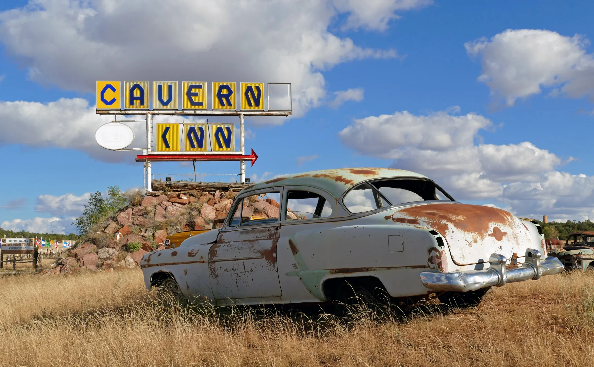
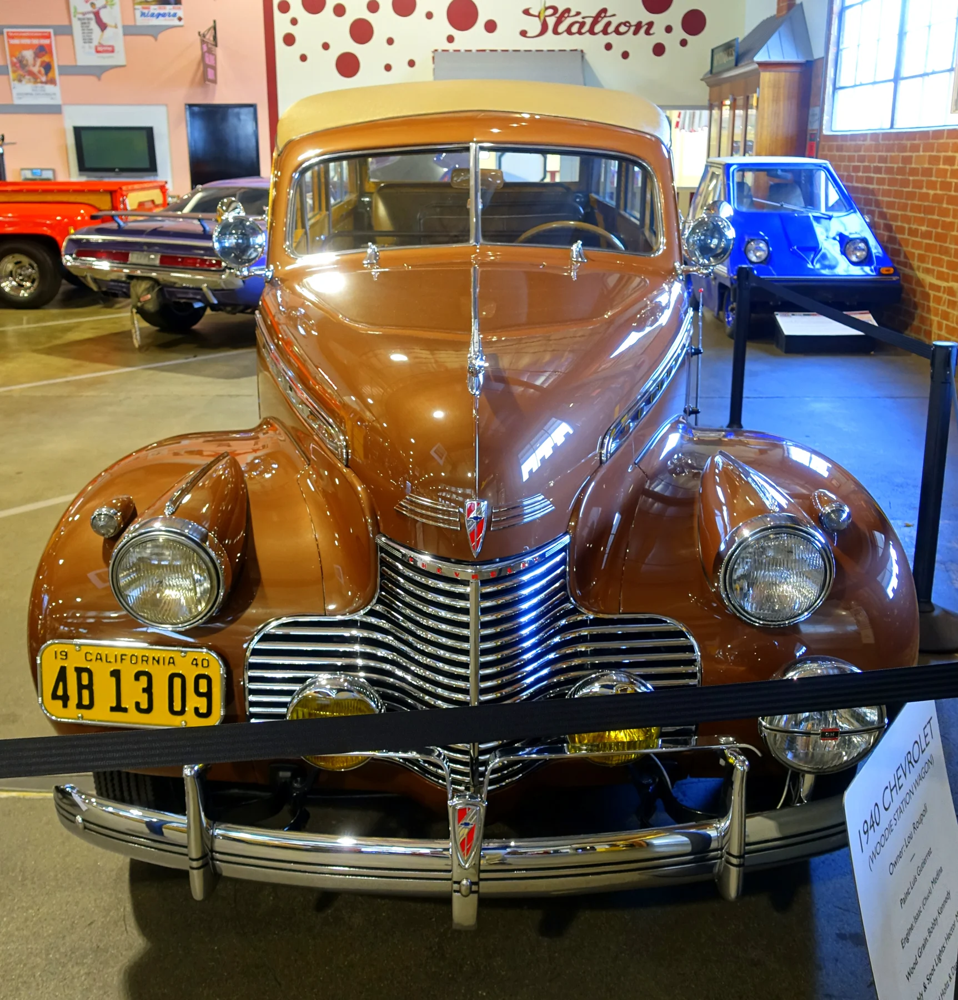
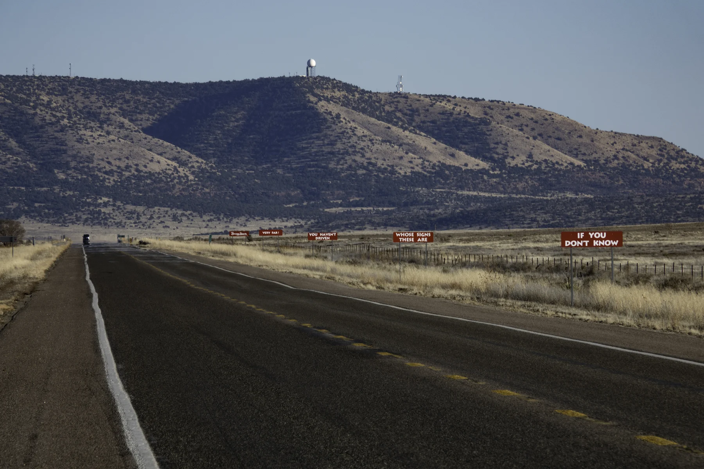
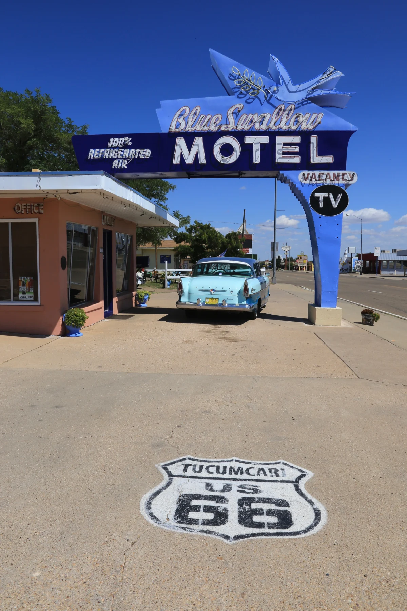

On the road - 1960s
The family road trip, one mile at a time
A paper map, a packed station wagon, and the whole summer waiting at the end of the highway.

The map that lived in the glove compartment
Before a calm voice on the dashboard announced every turn, a family road trip began with a paper map. It came from the gas station, folded into neat rectangles, and it lived in the glove compartment beside the pencils, the napkins and last year's postcards. Somebody in the front seat, usually the same somebody every trip, became the navigator.
Perhaps you remember tracing the route with one finger, trying to hold the map so it did not block the windshield. Dad might call out, "How far to the next town?" and you measured with your thumb. Once the map was fully open it could cover half the front seat, and no one in the family could ever fold it back along the same creases. By the second day it closed in its own way, and that was simply accepted.
Packing the car was its own event
Suitcases went into the trunk, and whatever did not fit traveled on the roof rack, tied down with rope and checked at every stop. The station wagon earned its keep on these trips: a broad bench seat, room for the cooler, and a back window where children could watch the road unspool behind them. Packing well was a quiet family art, and somebody always had an opinion about it.

Maybe you remember the cooler riding between someone's feet, holding sandwiches wrapped in wax paper and a thermos of coffee for the grown-ups. A roadside picnic table could become the family dining room for half an hour. Lunch tasted a little better out of the trunk, with trucks rolling past and the map waiting on the dashboard.
The service station ritual
Gas stations were full-service then, and stopping for fuel came with a small ceremony. You pulled in over the little bell hose, and an attendant came out to fill the tank, clean the windshield and check the oil. Children watched from the back seat as if a crew were preparing the car for the next leg of an expedition.
The attendant might hand over a free state map or answer the question every traveler asked: what is the road like up ahead? Some families carried an AAA TripTik, a spiral of narrow map strips made for their exact route, flipped page by page as the miles went by. It felt official, like holding a ticket to somewhere.
Games that filled the back seat
There was no screen in the car, so the window did the work. The license plate game turned every passing car into a small victory, and a plate from a faraway state could cause real excitement. The alphabet game sent everyone hunting for letters on billboards and storefronts, and the letter Q could hold up the whole car for miles.
Perhaps you sang along with the radio until the station faded to static somewhere between towns. Perhaps you counted telephone poles, or cows, or red barns. And sooner or later, from the back seat, came the question every parent expected: "Are we there yet?" The answer was mileage, or a guess, or the hopeful phrase "not much longer."
Signs you read like a story
The highway itself kept you entertained. Burma-Shave signs arrived in little sets, one short line per sign, and the whole car read them aloud in rhythm until the brand name appeared at the end. It was advertising, but it felt like a joke the road was telling just for you.

Then there were the billboards promising wonders fifty miles ahead: a giant statue, a mystery spot, the world's largest something. An unplanned detour to one of these places often became the story the family told for years. The two-lane highways helped. They ran straight through the middle of towns, past diners, garages and main streets, so the journey was full of reasons to slow down.
The welcome glow of VACANCY
At the end of a long driving day, the family scanned the roadside for one glowing word: VACANCY. Motels, motor courts and little rows of tourist cabins lined the way into town, each with its own sign doing its best to look like home. If the first place was full, you simply drove on and hoped the next neon light would be kinder.

Maybe you remember the room itself: the vibrating bed that took a quarter, the ice machine down the walkway, the little wrapped soaps. In the morning there might be a postcard rack in the office, and a few handwritten lines home carried the familiar message, "Wish you were here." A felt pennant from the gift shop went home too, proof on a bedroom wall that the family had really been somewhere.
When things went a little wrong
Not every mile was smooth. A summer traffic jam could turn the back seat warm and restless. Steam might rise from under the hood on a long hill, and everyone piled out while the engine cooled. A flat tire meant the spare, the jack and the lug wrench came out, and the whole family stood a safe distance away offering advice.
Those small troubles became part of the trip's legend. The wrong turn that added an hour. The picnic in the rain, eaten inside the car. Years later, the smooth days blur together, but the day the radiator boiled over on the way to the lake is still told exactly the same way.
What road trip detail comes back to you first?
Try picturing the car your family drove. Who sat where? What was in the cooler, and which songs came on the radio? And what was the one attraction, restaurant or motel sign that meant the vacation had truly begun?
Ask someone who rode beside you what they remember. You may find their clearest memory is a detail you had nearly forgotten, waiting all these years in the glove compartment.